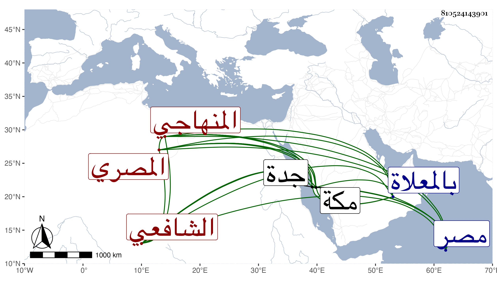

0902Sakhawi.DawLamic.ITO20230111-ara1.EIS1600.810524143901
Biography ID: 810524143901
55
محمد بن عبد الرحيم بن أحمد الشمس المصري الشافعي المنهاجي وهي شهرة جده لكونه يحفظ المنهاج أما أبوه فكان أعجوبة في حسن الأذان مشهورا بذلك يضرب به المثل في حسن الصوت ، وهو سبط الشمس بن اللبان ولذا كان ابنه صاحب الترجمة يعرف أيضا بسبط اللبان . ولد سنة اثنتين وسبعين وسبعمائة تقريبا أو التي قبلها ومات أبوه وهو صغير فنشأ يتيما ذكره شيخنا في إنبائه وقال إنه اشتغل قديما وأخذ عن مشايخ العصر كالعز محمد ابن جماعة والشمس بن القطان وقرأ عليه صحيح البخاري بحضوري بل قرأ على ترجمة البخاري من جمعي يوم الختم ، وتعاني نظم الشعر فتمهر فيه وأنشأ عدة قصائد ومقاطيع وكذا مهر في الفقه وأصوله وعمل المواعيد وشغل الناس ، ولزم بأخرة جامع عمر ولذلك ولقراءة الحديث وكانت قراءته فصيحة صحيحة ، وكان معه إمامة التربة الظاهرية بالصحراء فتركها اختيارا ، وانتفع به أهل مصر سيما مع تواضعه وكان حسن الإدراك واسع المعرفة بالفنون ، حج في سنة ست وثلاثين من البحر ودخل مكة في رجب فأقام حتى قضى نسكه ورمى جمرة العقبة ثم رجع فمات قبل طواف الإفاضة في ذي الحجة منها يعني بعد أن كان أشرف في مجيئه على الغرق ثم نهب ما معه من أثاث وثياب بجدة ، وحصل له قبول تام بمكة وعمل فيها المواعيد الجيدة بل وأقرأ العلم إلى أن مات كما سبق فجأة وحمل من الغد ودفن بالمعلاة جوار السيدة خديجة . قلت : ورأيته شهد بمكة على ابن عياش في سلخ ذي القعدة منها بإجازة عبد الأول . قال شيخنا : سمعت من نظمه وطارحني مرارا وكتب عني كثيرا . وقال في معجمه إنه اشتغل كثيرا ونظم الشعر ففاق الأقران ولازم شيخنا العز بن جماعة ومهر في الفنون سمعت من شعره وطارحني ومدحني بقصيدة . قلت وهو في عقود المقريزي باختصار ، وقد سمع على الصلاح الزفتاوي الصحيح وروي عن الزين العراقي وغيره . ومن نظمه :
| أحبتي والخضوع يشهد | أني به مغرم مسهد |
| ألطف من خامة إذا ما | مرت به نسمة تأود |
| أودعتموا سمعه حديثا | كالسمط من جفنه تبدد |
| فالدمع والسمع عن ملام | مسفه ذا وذا مسدد |
| وعاذل كلما رآني | أركض خيل الدموع فند |
| أروغ من ثعلب ومن لي | أن لا أرى شكله المبرد |
| حمدت ذمي له ومدحي | لسيد المرسلين أحمد |
